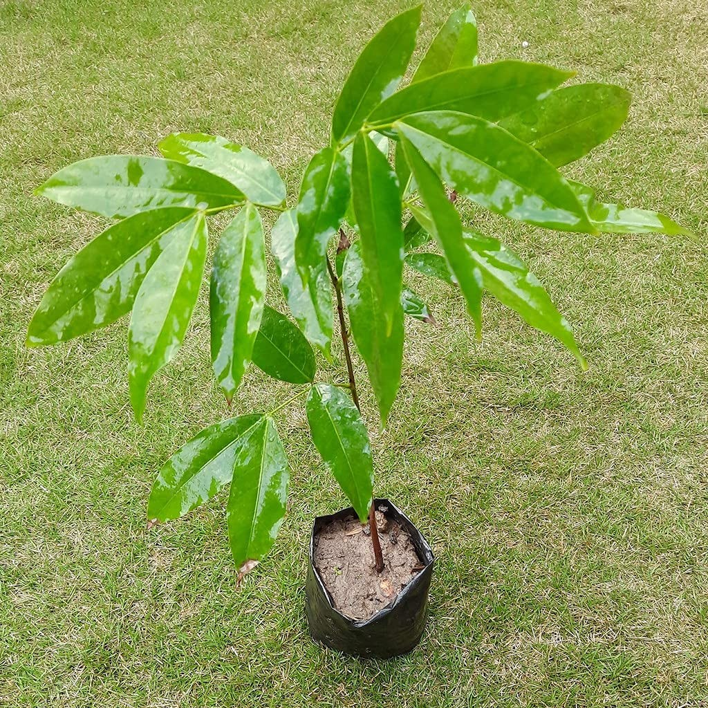
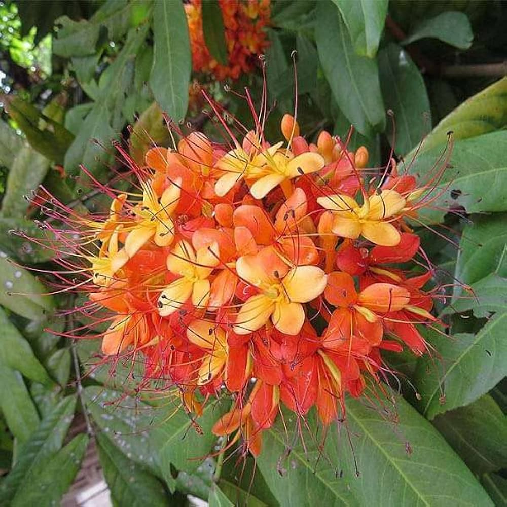

Working together for a greener future 🌿
The Ashoka Tree (Saraca asoca) is a sacred and beautiful tree native to India. It is known for its bright orange-red flowers and evergreen leaves. In Indian culture, the Ashoka tree symbolizes love, prosperity, and happiness. It is often planted in gardens, temples, and educational campuses because it improves air quality and enhances natural beauty. The tree also has medicinal importance in traditional Ayurveda and helps support biodiversity by providing shelter for birds and insects.
अशोक का वृक्ष (Saraca asoca) भारत का एक पवित्र और सुंदर वृक्ष है। यह अपने चमकीले नारंगी-लाल फूलों और हरे पत्तों के लिए प्रसिद्ध है। भारतीय संस्कृति में अशोक वृक्ष प्रेम, समृद्धि और खुशी का प्रतीक माना जाता है। इसे अक्सर मंदिरों, बगीचों और शैक्षणिक परिसरों में लगाया जाता है क्योंकि यह वायु को शुद्ध करता है और पर्यावरण को सुंदर बनाता है। आयुर्वेद में भी अशोक वृक्ष का विशेष महत्व है और यह पक्षियों तथा छोटे जीवों के लिए आश्रय प्रदान करता है।


MB/25/137
MB/25/103
MB/25/136
MB/25/149
MB/25/40
MB/25/28
MB/25/44
MB/25/20
MB/25/67
MB/25/134
MB/25/31
MB/25/138
MB/25/89
MB/25/102
MB/25/90